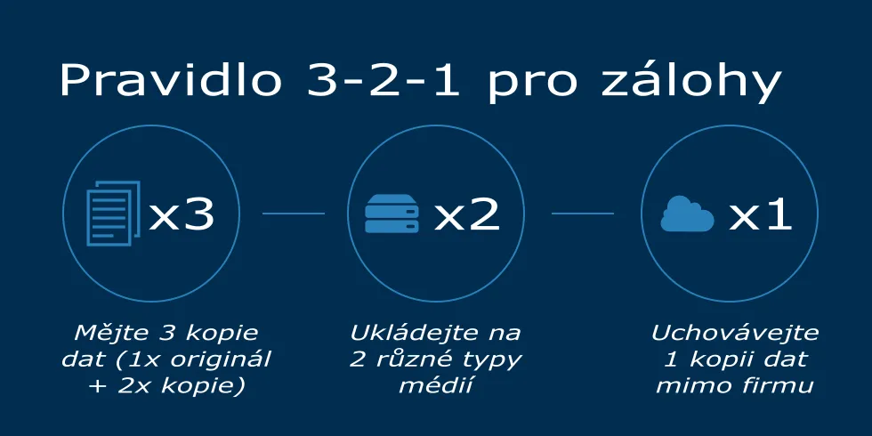

Typy a strategie záloh
Zálohování může probíhat jednorázově nebo pravidelně podle pevného plánu, což se využívá hlavně ve firmách. Volba správné strategie závisí na důležitosti dat a na tom, jak rychle je potřeba je obnovit.
Inkrementální záloha ukládá pouze soubory, které se změnily od poslední zálohy. Výhodou je menší velikost dat, nevýhodou složitější obnova.
Rozdílová (diferenciální) záloha ukládá změny od poslední úplné zálohy. Obnova je jednodušší, protože stačí poslední úplná a rozdílová záloha.
Zásady bezpečného zálohování
- Fyzické oddělení: Zálohy by neměly být uložené na stejném místě jako počítač.
- Kontrola: Pravidelné ověřování, že jsou zálohy čitelné.
- Důvěrnost: Ochrana dat pomocí hesla nebo šifrování.
- Pravidlo 3-2-1: 3 kopie dat, 2 různá média, 1 kopie mimo budovu.
Možnosti zálohování
Záloha adresářů znamená prosté kopírování nebo archivaci souborů pomocí nástrojů jako 7-Zip nebo WinRAR.
Záloha oddílu (image) vytváří přesnou kopii celého disku nebo oddílu včetně operačního systému. Umožňuje rychlou obnovu plně funkčního systému.
Média a nástroje
- Média: Externí disky, NAS, cloud, optické disky.
- Nástroje v OS: Například Obnovení systému ve Windows.
- Specializovaný software: Clonezilla, Acronis.